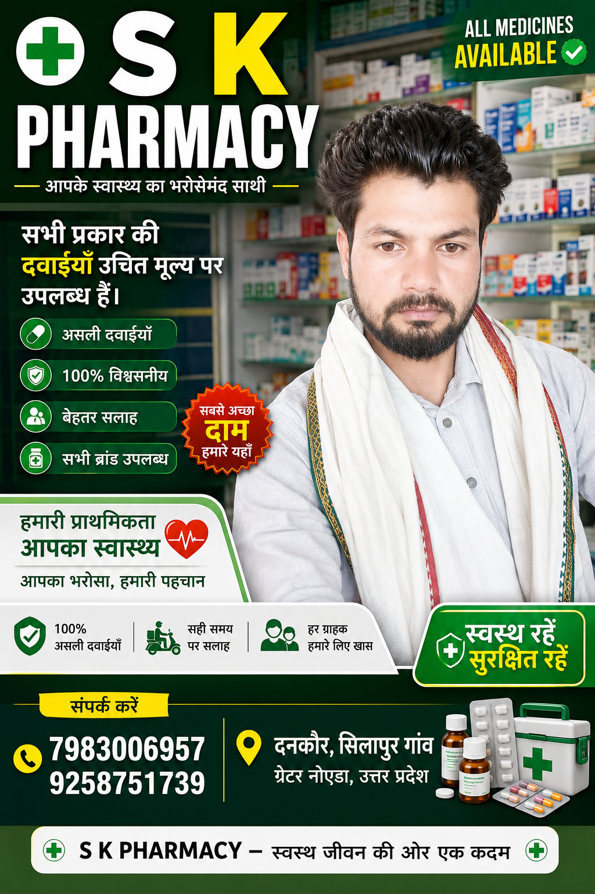

Professional Healthcare & Medicine
S K Pharmacy जिला गौतम बुद्ध नगर का एक विश्वसनीय मेडिकल स्टोर है। हमारे संचालक डॉ. साकिर खान (CMS-ED) अनुभवी हैं। हम 100% शुद्ध और असली दवाइयां आपके घर तक पहुँचाते हैं।
आजकल बढ़ती गर्मी और चिलचिलाती धूप की वजह से लू लगने का खतरा बढ़ गया है। लू लगने पर शरीर में पानी की कमी हो जाती है और बुखार, सिरदर्द या कमजोरी महसूस होने लगती है। आइए जानते हैं इससे बचने के कुछ आसान तरीके:
S K Pharmacy आपकी सेहत का ख्याल रखता है। हमारे यहाँ सभी प्रकार की असली दवाइयां उचित दाम पर उपलब्ध हैं।
< /section>